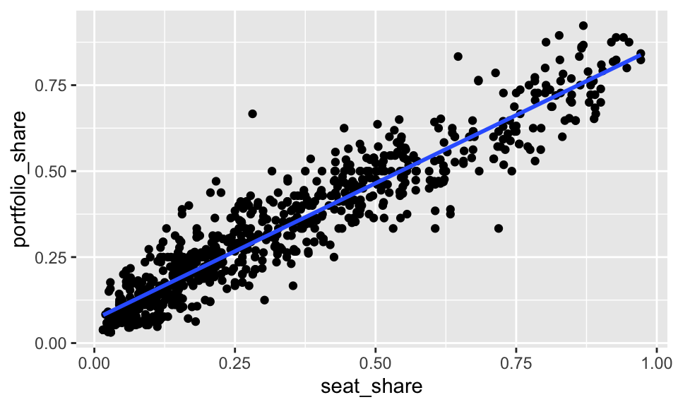
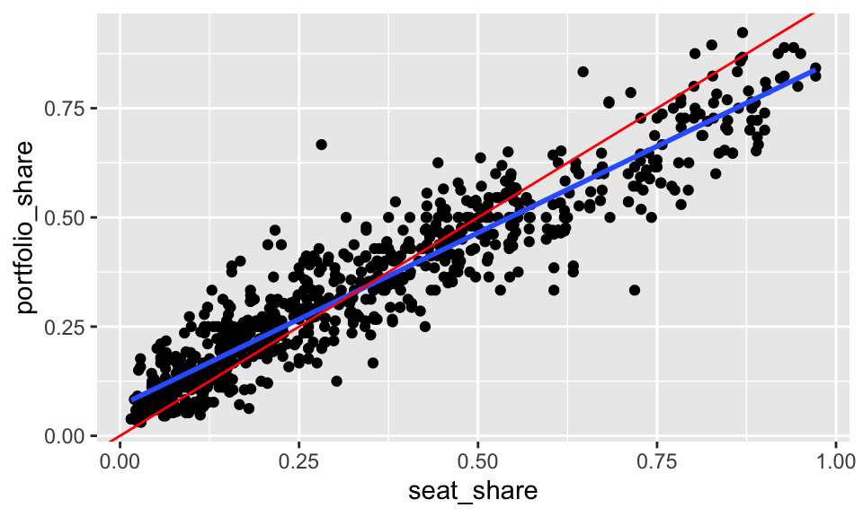

gamson <- read_rds("data/gamson.rds")
ggplot(gamson, aes(x = seat_share, y = portfolio_share)) +
geom_point() +
geom_smooth()Regression in R
To fit a regression model in R, we can use the following approach:
- Use
lm()to fit the model. - Use
coef(),arm::display(),modelsummary::modelsummary, orsummary()to quickly inspect the slope and intercept.
geom_smooth()
In the context of ggplot, we can show the fitted line with geom_smooth().
By default, geom_smooth() does two things we don’t want:
- First, it fits a smoothed curve rather than a straight line. There’s nothing wrong with a smoothed curve—sometimes it’s preferable to a straight line. But we don’t yet understand how to fit a smoothed curve. To us the least-squares fit, we supply the argument
method = "lm"togeom_smooth(). - Second, it also includes the uncertainty around the line by default. Notice the grey band around the line, especially in the top-right. We don’t have a clear sense of how uncertainty enters the fit, nor do we understand a standard error, so we should not include the uncertainty in the plot (at least for now). To remove the grey band, we supply the argument
se = FALSEtogeom_smooth().
ggplot(gamson, aes(x = seat_share, y = portfolio_share)) +
geom_point() +
geom_smooth(method = "lm", se = FALSE)
In the case of Gamson’s law, the line \(y = x\) is theoretically relevant. It’s not the regression line, it’s the line that indicates a perfectly proportional portfolio distribution. To include it, we can use geom_abline().
ggplot(gamson, aes(x = seat_share, y = portfolio_share)) +
geom_point() +
geom_smooth(method = "lm", se = FALSE) +
geom_abline(intercept = 0, slope = 1, color = "red")
lm()
The lm() function takes two key arguments.
- The first argument is a formula, which is a special type of object in R. It has a left-hand side and a right-hand side, separated by a
~. You put the name of the outcome variable \(y\) on the LHS and the name of the explanatory variable \(x\) on the RHS. (We haven’t seen this yet, but it’s common to have multiple variables on the RHS likey ~ x1 + x2 + x3.) - The second argument is the dataset.
fit <- lm(portfolio_share ~ seat_share, data = gamson)Quick Look at the Fit
We have several ways to look at the fit. Experiment with coef(), arm::display(), modelsummary::modelsummary(), and summary() to see the differences. For now, we only understand the slope and intercept, so coef() works perfectly.
coef(fit)(Intercept) seat_share
0.06913558 0.79158398 The coef() function outputs a numeric vector with named entries. The intercept is named (Intercept) and the slope is named after its associated variable.
Experiment with the others!
# a bit more detail
arm::display(fit)
# a lot more detail
summary(fit)
# exports to a lot of different formats, see help file
modelsummary::modelsummary(fit)Review Exercises
Exercise 1
- Load the
anscmobedataset into R. Download from here if needed. Useglimpse(anscombe)to get a quick look at the data. Realize that this one data frame actually contains four different datasets stacked on top of each other and numbered I, II, III, and IV. - Fit a regression model on each “dataset” in the anscombe dataset. To only use a subset of the dataset, you can
filter()the dataset before supplying thedatatolm()or use can supply thesubsetargument tolm(). In this case, just supplyingsubset = dataset == "I", for example, is probably easiest. Fit the regression to all four datasets and put the intercept, slope, RMS of the residuals, and number of observations for each regression in a little table. Interpret the results. - For each of the four regression fits, create a scatterplot with the least squares regression line. Describe any inadequacies.
Exercise 2
Use regression to test Clark and Golder’s (2006) theory using the parties dataset we’ve seen before (from here). First, create scatterplots between ENEG and ENEP faceted by the electoral system with with the least-squares fit included in each. Then fit three separate regression models. Fit the model \(\text{ENEP}_i = \alpha + \beta \text{ENEG}_i + r_i\) for SMD systems, small-magnitude PR systems, and large-magnitude PR systems. Include the intercept, slope, and RMS of the residuals from each fit in a little table. Explain the results. Explain any inadequacies of the regression model (from the scatterplots).
Exercise 3
Get the economic-models.csv dataset here. You can find all the details here.
- In three separate regressions, use GDP, RDI, and unemployment to explain the incumbent’s margin of victory. Which measure of economic performance best describes incumbents’ vote shares?
- Using the best model of the three, which incumbents did much better than the model suggests? Which incumbents did much worse? Hint: Inspect the scatterplots; use labels!
Use tables and figures wisely to answer the questions above.